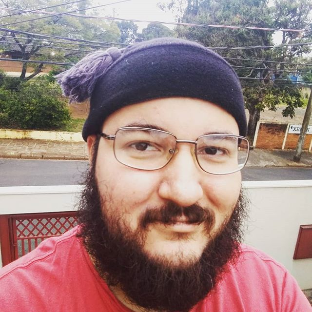

Hugo Cattarucci Botós
Mathematician • AI Researcher • Data Science Enthusiast
My research focused mainly on hyperbolic geometry, differential topology, and geometric topology. Currently, I have been researching deep learning.
From July 2022 to February 2023, I was a temporary lecturer at the University of São Paulo (ICMC-USP). Then I held a postdoctoral position at the Max-Planck-Institut für Mathematik (MPIM) in Germany from March 2023 to August 2023. Later, I worked as a postdoc at the University of São Paulo for the following two years. Currently working as an AI researcher at Neospace.
4
Publications
2
Preprints
3
Courses
5
Talks
Career
Present
AI Researcher — Neospace
Currently working on deep learning research and applications.
2023 – 2025
Postdoc — University of São Paulo (ICMC-USP)
Postdoctoral research in mathematics.
Mar – Aug 2023
Postdoc — Max-Planck-Institut für Mathematik (MPIM)
Postdoctoral position in Bonn, Germany.
Jul 2022 – Feb 2023
Temporary Lecturer — ICMC-USP
Lecturer at the Institute of Mathematics and Computer Science.
2018 – 2022
PhD in Mathematics — USP
Thesis: Orbibundles, complex hyperbolic manifolds and geometry over algebras.
2016 – 2018
Master's in Mathematics — USP
Dissertation: Propriedades globais de uma classe de complexos diferenciais.